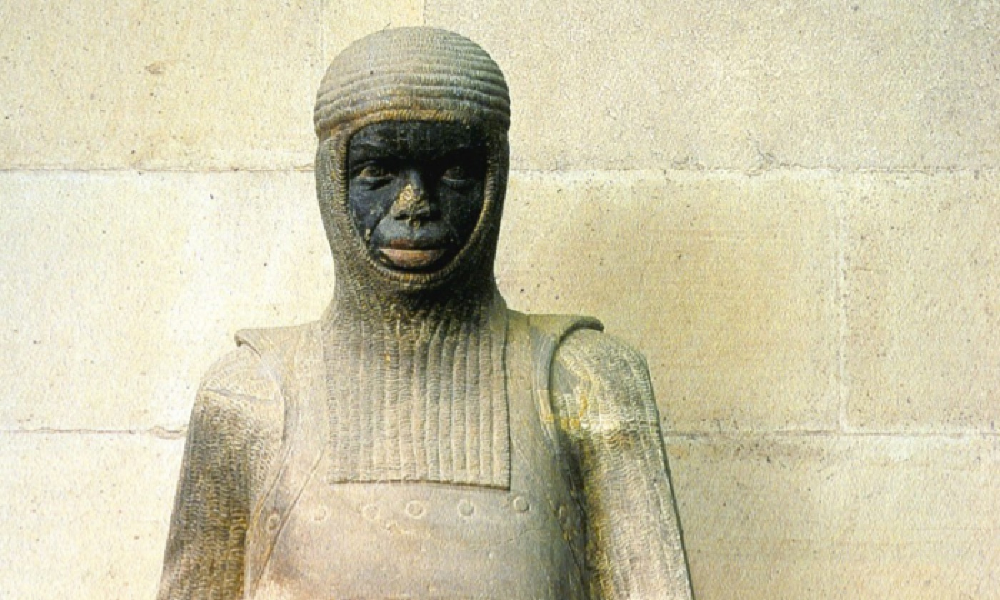

Святой Морис и Фиванский легион
история верности и мученичества
Исторический контекст
III век н.э. — Римская империя при императоре Максимиане
Христианство под запретом, начались гонения на верующих
Фиванский легион направлен из Египта в Галлию
Начало пути, ведущего в Швейцарию и к легенде о Святом Маврикии

Фиванский легион
6600 христианских солдат — Фиванский легион
Отказ приносить языческие жертвы римским богам
Казнь каждой десятой — децимация, затем мученичество всего легиона
Командир — Святой Маврикий (Морис), христианский мученик и покровитель
Аббатство Сан-Морис
Основано в 515 году королём Сигизмундом Бургундским
Древнейшая обитель Европы
Реликвии Святого Мориса
Паломнический центр
Барельеф Святого Мориса
Изображён как римский воин
В доспехах, с щитом и копьём
Символ мужества и духовной стойкости
Названия в римскую эпоху
Современные названия — в античности:
Современное название
Античное название
Значение
Saint-Maurice
Agaunum
Место мученичества Фиванского легиона
Martigny
Octodurus
Епископская резиденция, важный римский город
Контекст:
Agaunum
упоминается в «Passio martyrum Acaunensium» Евхерия Лионского (~440 г.)
Octodurus
— раннехристианский центр, епископ Теодор носил титул «епископ Октодура»
Наследие Святого Мориса
Один из самых почитаемых военных святых Европы
Покровитель воинов, рыцарей, Папской гвардии и многих орденов
Имя Морис распространено во Франции, Германии, Швейцарии, Италии
К нему обращались при стихийных бедствиях — граде, бурях и заморозках
Источники и исследования
1. Раннехристианские тексты:
Eucher de Lyon,
Passio martyrum Acaunensium
(ок. 440)
Хроника Фредегара (VII в.)
Passio Urs et Victor
(X век)
2. Археология и письменные свидетельства:
Раскопки в Сен-Морисе, Сионе, Золотурне
Аббатство Сен-Морис и церковь Святого Петра (Soleure)
3. Современные академические источники:
DHS: Mauricius
DHS: Légion thébaine
DHS: Agaune
DHS: Abbaye de Saint-Maurice
abbaye-stmaurice.ch
Wikipedia: Theban Legion
Карты
Королевство бургундов около 500 года
География:
Юго-восточная Галлия (современная Франция, Швейцария, север Италии)
Столицы:
Лион (Lugdunum), позднее Женева (Genava)
Границы:
Франки (север), Остготы (восток), Вестготы (юг)
История:
Основано в 443 г. как федерат Западной Римской империи
Правители:
Гундобад, затем Сигизмунд
Законодательство:
"Lex Burgundionum" — Бургундская правда
Источник: Wikimedia Commons